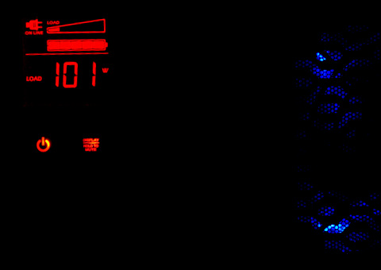

CUDA vs SSE2. Part 2.
Anatoliy Kuznetsov. Igor Tolstoy. 2009.
Introduction
In a previous article we started building a benchmark application to better understand if GPGPU platform from nVidia is suitable for bit-vector integer algorithms for search and database acceleration and compression. Here is our results from the first try: Part 1.
nVidia CUDA hardware
For this experiment we took nVidia GTS 250, PCI-E x16, 512MB, TDP 150W. At the moment the article was written the price for this card was $100-$140 (entry-medium level GPU).

nVidia GTS 250 PCI-E
CUDA optimization notes (what was done).
We did a fair amount of homework to rewrite version 1 and improve performance.
CUDA code
#include < stdlib.h >
#include < stdio.h >
#include < string.h >
#include < math.h >
#include "cutil_inline.h"
#define PROC 256
#define size_B 2048
#define size_C 32
#define size_S 3 * 67584
#define mem_size_B sizeof(unsigned int) * size_B * PROC
#define mem_size_C sizeof(unsigned int) * size_C * size_C * PROC
void DataInit(unsigned int * data, int size, unsigned int val)
{
for (int i = 0; i < size; ++i)
data[i] = val;
}
__global__ void TM(unsigned int* A,unsigned int* B, unsigned int*C)
{
__shared__ unsigned int Bs[2048];
int ibit = threadIdx.x; //32
int iblock = threadIdx.y; //8
int jblock = blockIdx.x;
int ind1 = (ibit << 6) + (iblock << 3);
int ind2 = (ibit << 6) + (iblock << 3) + (jblock << 11);
int ind3 = (iblock << 8);
int ind4 = (jblock << 10);
unsigned int * Cy = &C [ind4];
unsigned int * Ax = &Bs[ind3];
unsigned int * Ay = &A [ind2];
unsigned int * Bx = &B [ind2];
unsigned int * By = &Bs[ind1];
long long * Ay64 = (long long * )Ay;
long long * Bx64 = (long long * )Bx;
long long * By64 = (long long * )By;
// from global to shared
By64[0] = Ay64[0]; By64[1] = Ay64[1]; By64[2] = Ay64[2]; By64[3] = Ay64[3];
//
__syncthreads();
unsigned int v[8];
for (int i = 0; i < 8; i++,Ax += 32)
{
// result on registers
v[i] =
(((Ax[0 ] >> ibit) & 1) << 0 ) | (((Ax[1 ] >> ibit) & 1) << 1 ) |
(((Ax[2 ] >> ibit) & 1) << 2 ) | (((Ax[3 ] >> ibit) & 1) << 3 ) |
(((Ax[4 ] >> ibit) & 1) << 4 ) | (((Ax[5 ] >> ibit) & 1) << 5 ) |
(((Ax[6 ] >> ibit) & 1) << 6 ) | (((Ax[7 ] >> ibit) & 1) << 7 ) |
(((Ax[8 ] >> ibit) & 1) << 8 ) | (((Ax[9 ] >> ibit) & 1) << 9 ) |
(((Ax[10] >> ibit) & 1) << 10) | (((Ax[11] >> ibit) & 1) << 11) |
(((Ax[12] >> ibit) & 1) << 12) | (((Ax[13] >> ibit) & 1) << 13) |
(((Ax[14] >> ibit) & 1) << 14) | (((Ax[15] >> ibit) & 1) << 15) |
(((Ax[16] >> ibit) & 1) << 16) | (((Ax[17] >> ibit) & 1) << 17) |
(((Ax[18] >> ibit) & 1) << 18) | (((Ax[19] >> ibit) & 1) << 19) |
(((Ax[20] >> ibit) & 1) << 20) | (((Ax[21] >> ibit) & 1) << 21) |
(((Ax[22] >> ibit) & 1) << 22) | (((Ax[23] >> ibit) & 1) << 23) |
(((Ax[24] >> ibit) & 1) << 24) | (((Ax[25] >> ibit) & 1) << 25) |
(((Ax[26] >> ibit) & 1) << 26) | (((Ax[27] >> ibit) & 1) << 27) |
(((Ax[28] >> ibit) & 1) << 28) | (((Ax[29] >> ibit) & 1) << 29) |
(((Ax[30] >> ibit) & 1) << 30) | (((Ax[31] >> ibit) & 1) << 31) ;
}
__syncthreads();
// from registers to shared
By[0] = v[0]; By[1] = v[1]; By[2] = v[2]; By[3] = v[3];
By[4] = v[4]; By[5] = v[5]; By[6] = v[6]; By[7] = v[7];
// transposed from shared to global
__syncthreads();
Bx64[0] = By64[0]; Bx64[1] = By64[1]; Bx64[2] = By64[2]; Bx64[3] = By64[3];
//
for (int i = threadIdx.y; i < 16; i += 8)
{
ibit = threadIdx.x; //32
iblock = i; //8*2
if (ibit == iblock)
{
long long * BX = (long long *)&Bs[ibit << 6];
Cy[(ibit << 5) + iblock] =
__popcll(BX[0]) + __popcll(BX[1]) + __popcll(BX[2]) + __popcll(BX[3]) +
__popcll(BX[4]) + __popcll(BX[5]) + __popcll(BX[6]) + __popcll(BX[7]) +
__popcll(BX[8]) + __popcll(BX[9]) + __popcll(BX[10]) + __popcll(BX[11]) +
__popcll(BX[12]) + __popcll(BX[13]) + __popcll(BX[14]) + __popcll(BX[15]) +
__popcll(BX[16]) + __popcll(BX[17]) + __popcll(BX[18]) + __popcll(BX[19]) +
__popcll(BX[20]) + __popcll(BX[21]) + __popcll(BX[22]) + __popcll(BX[23]) +
__popcll(BX[24]) + __popcll(BX[25]) + __popcll(BX[26]) + __popcll(BX[27]) +
__popcll(BX[28]) + __popcll(BX[29]) + __popcll(BX[30]) + __popcll(BX[31]) ;
__syncthreads();
ibit = 31 - ibit;
iblock = 31 - iblock;
long long * BY = (long long *)&Bs[iblock << 6];
Cy[(ibit << 5) + iblock] =
__popcll(BY[0]) + __popcll(BY[1]) + __popcll(BY[2]) +
__popcll(BY[3]) + __popcll(BY[4]) + __popcll(BY[5]) +
__popcll(BY[6]) + __popcll(BY[7]) +
__popcll(BY[8]) + __popcll(BY[9]) + __popcll(BY[10]) +
__popcll(BY[11]) + __popcll(BY[12]) + __popcll(BY[13]) +
__popcll(BY[14]) + __popcll(BY[15]) +
__popcll(BY[16]) + __popcll(BY[17]) + __popcll(BY[18]) +
__popcll(BY[19]) + __popcll(BY[20]) + __popcll(BY[21]) +
__popcll(BY[22]) + __popcll(BY[23]) +
__popcll(BY[24]) + __popcll(BY[25]) + __popcll(BY[26]) +
__popcll(BY[27]) + __popcll(BY[28]) + __popcll(BY[29]) +
__popcll(BY[30]) + __popcll(BY[31]) ;
}
else
{
if (ibit > iblock)
{
ibit = 31 - ibit;
iblock = 31 - iblock;
}
long long * BX = (long long *)&Bs[ibit << 6];
long long * BY = (long long *)&Bs[iblock << 6];
Cy[(ibit << 5) + iblock] = Cy[(iblock << 5) + ibit] =
__popcll(BX[0 ]^BY[0 ]) + __popcll(BX[1 ]^BY[1 ]) + __popcll(BX[2 ]^BY[2 ]) +
__popcll(BX[3 ]^BY[3 ]) + __popcll(BX[4 ]^BY[4 ]) + __popcll(BX[5 ]^BY[5 ]) +
__popcll(BX[6 ]^BY[6 ]) + __popcll(BX[7 ]^BY[7 ]) +
__popcll(BX[8 ]^BY[8 ]) + __popcll(BX[9 ]^BY[9 ]) + __popcll(BX[10]^BY[10]) +
__popcll(BX[11]^BY[11]) + __popcll(BX[12]^BY[12]) + __popcll(BX[13]^BY[13]) +
__popcll(BX[14]^BY[14]) + __popcll(BX[15]^BY[15]) +
__popcll(BX[16]^BY[16]) + __popcll(BX[17]^BY[17]) + __popcll(BX[18]^BY[18]) +
__popcll(BX[19]^BY[19]) + __popcll(BX[20]^BY[20]) + __popcll(BX[21]^BY[21]) +
__popcll(BX[22]^BY[22]) + __popcll(BX[23]^BY[23]) +
__popcll(BX[24]^BY[24]) + __popcll(BX[25]^BY[25]) + __popcll(BX[26]^BY[26]) +
__popcll(BX[27]^BY[27]) + __popcll(BX[28]^BY[28]) + __popcll(BX[29]^BY[29]) +
__popcll(BX[30]^BY[30]) + __popcll(BX[31]^BY[31]) ;
}
}
}
void Init(int argc, char** argv)
{
if( cutCheckCmdLineFlag(argc, (const char**)argv, "device") )
cutilDeviceInit(argc, argv);
else
cutilSafeCall(cudaSetDevice( cutGetMaxGflopsDeviceId()));
cutilSafeCall(cudaSetDeviceFlags(cudaDeviceMapHost));
}
void Close(int argc, char** argv)
{
cutilSafeCall(cudaThreadExit());
cutilExit(argc, argv);
}
void runTest(int argc, char** argv)
{
unsigned int * h_A;
unsigned int * h_B;
unsigned int * h_C;
unsigned int * d_A;
unsigned int * d_B;
unsigned int * d_C;
unsigned int timer = 0;
cutilCheckError(cutCreateTimer(&timer));
cutilCheckError(cutStartTimer(timer));
cutilSafeCall(cudaHostAlloc((void **)&h_A,
mem_size_B,cudaHostAllocMapped | cudaHostAllocWriteCombined | cudaHostAllocPortable));
cutilSafeCall(cudaHostAlloc((void **)&h_B,
mem_size_B,cudaHostAllocMapped | cudaHostAllocWriteCombined | cudaHostAllocPortable));
cutilSafeCall(cudaHostAlloc((void **)&h_C,
mem_size_C,cudaHostAllocMapped | cudaHostAllocWriteCombined | cudaHostAllocPortable));
cutilSafeCall(cudaMalloc(&d_A,mem_size_B));
cutilSafeCall(cudaMalloc(&d_B,mem_size_B));
cutilSafeCall(cudaMalloc(&d_C,mem_size_C));
unsigned repeats = 30000;
for (unsigned int i = 0; i < repeats; i++)
{
DataInit(h_A, size_B * PROC,0xF00FF00F);
cutilSafeCall(cudaMemcpy(d_A,h_A,mem_size_B,cudaMemcpyHostToDevice));
dim3 trs3(32,8);
TM <<< PROC,trs3 >>>(d_A,d_B,d_C);
cutilSafeCall(cudaThreadSynchronize());
cutilSafeCall(cudaMemcpy(h_B,d_B,mem_size_B,cudaMemcpyDeviceToHost));
cutilSafeCall(cudaMemcpy(h_C,d_C,mem_size_C,cudaMemcpyDeviceToHost));
}
cutilCheckError(cutStopTimer(timer));
printf("Processing time: %f (ms) \n", cutGetTimerValue(timer)/(PROC*repeats));
cutilCheckError(cutDeleteTimer(timer));
{
for (unsigned int i = 0; i < size_C; i++)
{
for (unsigned int j = 0; j < size_C; j++)
{
printf("%5d ",h_C[size_C * i + j]);
}
printf("\n");
}
}
cutilSafeCall(cudaFreeHost(h_A));
cutilSafeCall(cudaFreeHost(h_B));
cutilSafeCall(cudaFreeHost(h_C));
}
Benchmark results
Version 1 benchmarks (from the previous article) gave us this numbers:
1.Core2 Quad 6600 2.4GHz(1 core) 32-bit -- 0.22ms 2.Core2 Quad (1 core) SSE2 -- 0.12ms 3.GT 9500 (1 SM) -- 0.42ms 4.GT 9500 (4 SM) -- 0.16ms (4 blocks at a time!)
Version 2 (improved version):
5. GT 9500 -- 0.06ms 6. GTS 250 -- 0.01ms
Power consumption (price to run)
For large scale operation is important to understand the electricity consumption patterns. To measure this we used APC UPS XS-1500 which can show us the system power consumtion at the socket. While at idle our test system consumes approximately 55W of electricity (this includes all the PC running Win7, disks and basic GUI graphics).
How about GPU? GPUs are known to be power hungry beasts, right? Ok, now we have instrumented measurements to understand the costs. While running benchmark our consumption fluctuated between 90W and 140W spending most of its time in 100-110W range.

CUDA benchmark power consumtion
Power comsumption numbers are pretty much comparable with Intel CPUs.
What about Nehalem?
No exact data yet. We experimented with Core i5 and SSE 4.2. It looks great! Best performance results can be achieved by using 64-bit compile plus SSE4.2 for bit-counting (POPCNT). Comparing to Core2 microarchitecture performance can be 30% better at the same clock speed. Number of cores is 4, typical mid-range server grade system has 2 CPUs. Our feeling is that 8 full (no hyperthreading) Nehalem cores clocked at 3+ GHz can be in approximately same category as GPU (not 10x slower like in the benchmark). Expected power consumption at the socket for 2 CPU system (TDP of 130W) is going to be around 270W and more.
Larabee?
Larabee... will probably come back later, as a grid CPU or something, but at this moment consumer release is canceled and the future for this perspective technology is not clear at all.
Conclusions
Acknowledgements
We would like to give credit to Alex Tutubalin (www.gpgpu.ru) for his valuable help in performance optimization and other interesting suggestions.